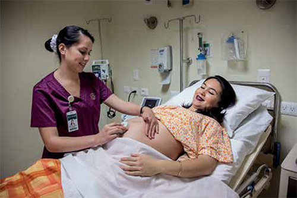
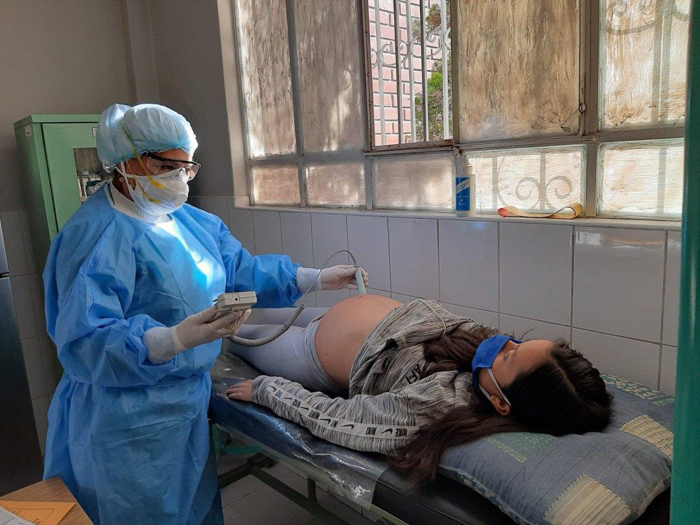
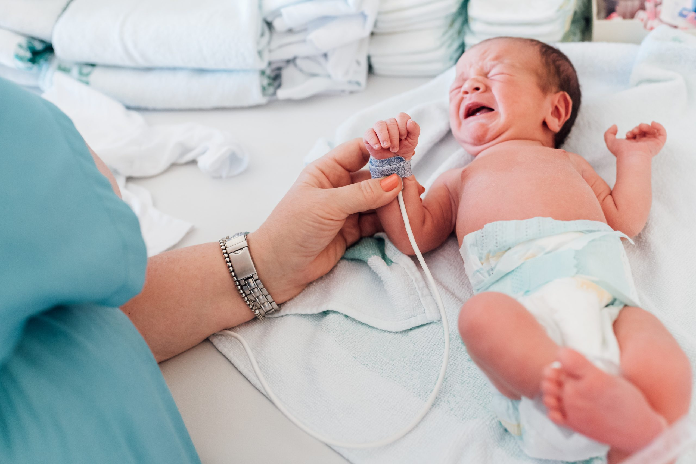
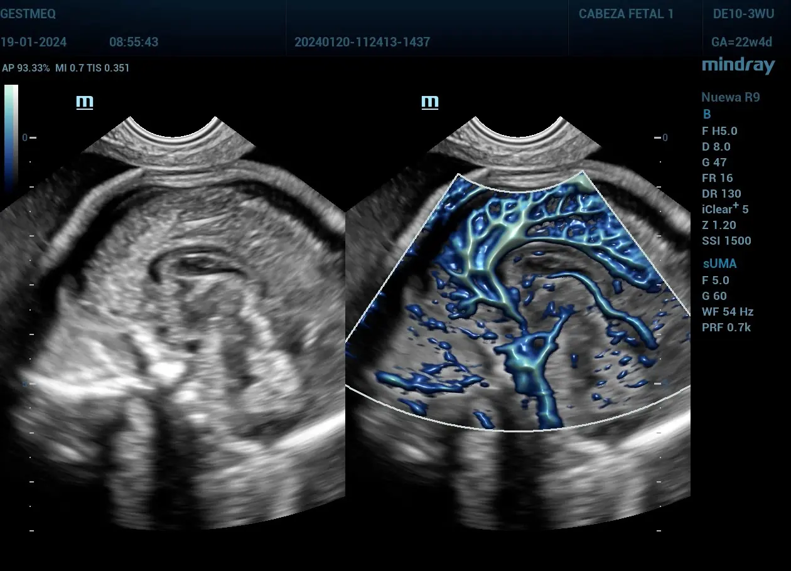
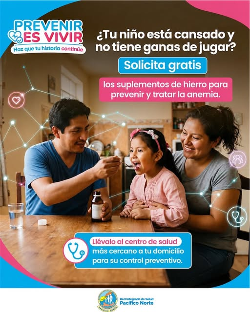
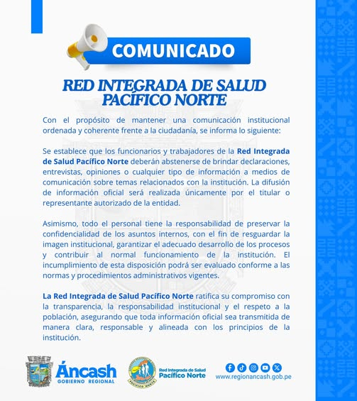
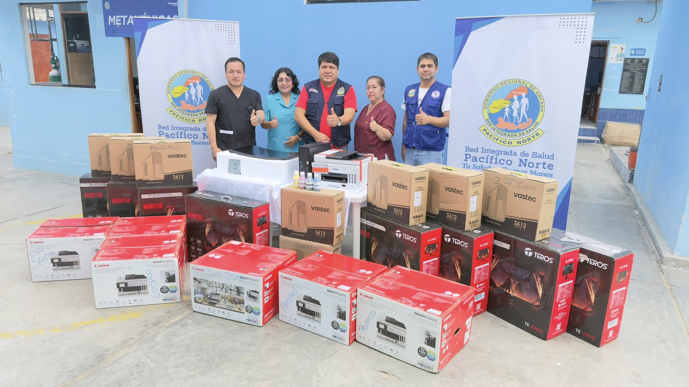

Atención integral orientada al diagnóstico, tratamiento y seguimiento de diversas condiciones de salud de la población en Chimbote.

Detectar la anemia a tiempo ayuda a proteger el crecimiento y desarrollo de nuestros niños.

La RIS Pacífico Norte fortalece sus lineamientos de comunicación institucional.

Nuevos equipos computacionales optimizarán la atención y registro en salud.